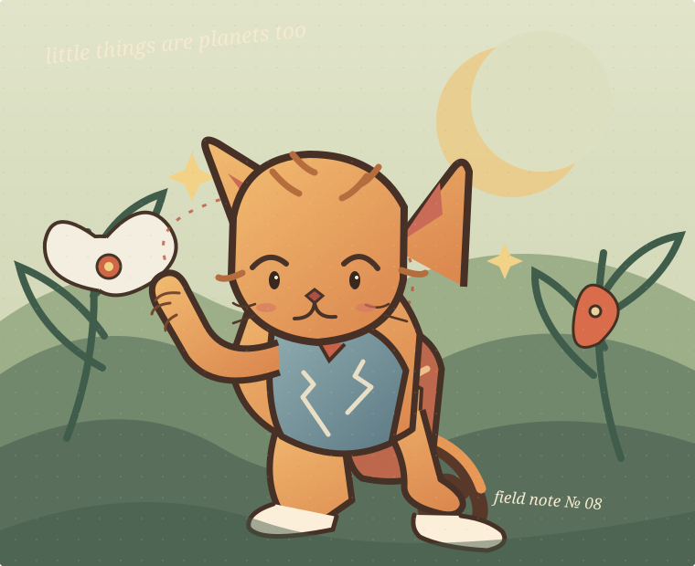

Drawn with a little curiosity
Good stories
have character.
I’m Your Name, an illustrator and visual storyteller making curious characters, expressive sketches, and little worlds worth getting lost in.

The good stuff
Made by hand,
full of feeling.
Character studies, story-led scenes, and sketchbook beginnings. Pick a drawing to see the thinking behind it.
From first doodle to final
A drawing should feel like it’s thinking.
The fun is in the searching. I leave room for the wonky first idea, then draw toward the clearest, most characterful answer.
Find the little story
We start with the feeling, audience, and one clear thing the picture should say. A short brief leaves the characters plenty of room to surprise us.
Doodle until it clicks
Loose thumbnails, silhouette passes, and expression tests come first. I try a few different shapes and poses before polishing anything.
Give it a voice
Clear line, a considered palette, and the right small details make the final illustration feel warm, specific, and unmistakably itself.
make a mess
first
A human with a pencil
Hi, I’m Your Name.
I’m an illustrator who loves drawing characters with a point of view: the one with too many pockets, the shy one peeking around the corner, the oddball everyone remembers.
My happy place is somewhere between a scruffy sketchbook page and a finished picture that still feels like a real person made it. I’m especially drawn to expressive cartooning, visual storytelling, and work that makes people look twice—and smile.
Currently open to illustration, character design, and picture-book collaborations.